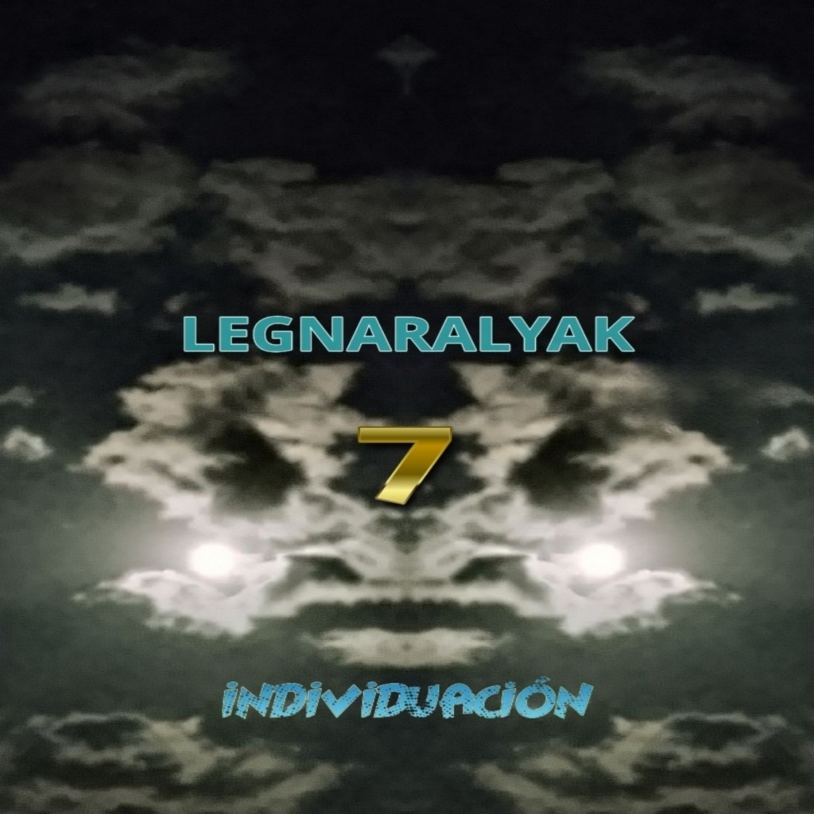

Aquí comparto canciones, ideas y el proceso creativo que hay detrás de LEGNARALYAK.
Canciones y proyectos musicales de LEGNARALYAK.
Historias, emociones y palabras convertidas en canciones.
Ideas sobre creatividad, identidad y el camino personal.
LEGNARALYAK es un espacio donde la música y la reflexión se encuentran.